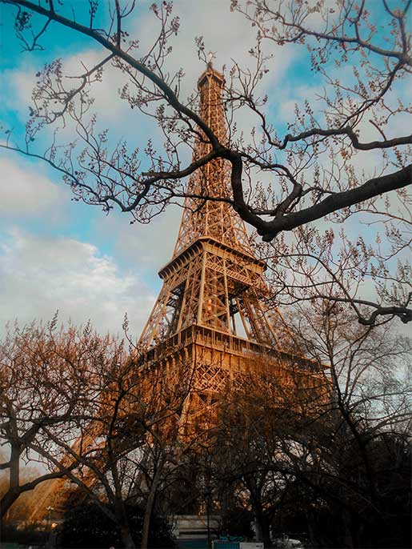
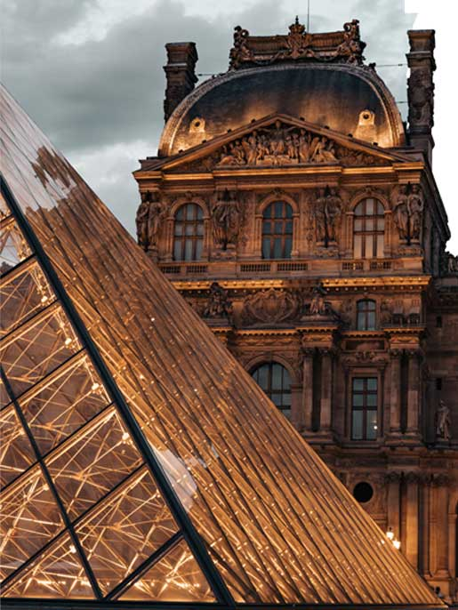
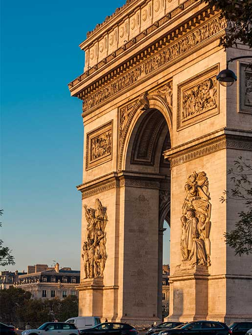
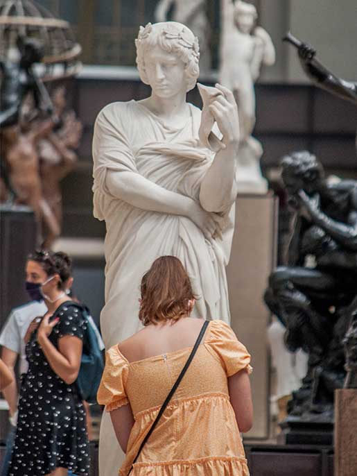

La Torre Eiffel, inicialmente llamada tour de 300 metros, es una estructura de hierro pudelado diseñada por los
ingenieros Maurice Koechlin y Émile Nouguier. Situada en el extremo del Campo de Marte a la orilla del rio Sena,
este monumento parisino, símbolo de Francia y de su capital, es la estructura más alta de la ciudad y el monumento
con mayor número de visitadas en el mundo, con 7.1 millones de turistas cada año. Fue construida en dos años, dos
meses y cinco días, y en su momento genero cierta controversia entre los artistas de la época, que la veían como
un monstruo de hierro.

Museo del Louvre

El Museo del Louvre es el museo nacional de Francia consagrado tanto en bellas artes como en arqueología y
artes decorativas anteriores al imperialismo. Está ubicado en Paris, en el antiguo palacio real del Louvre.
En sus 210.000 metros cuadrados se exponen unas 35.000 obras, de las cuales 7.000 son pinturas, y unos 380.000
objetos y antigüedades. La apertura del Louvre en 1793 significo, dentro de la historia de los museos, el
traspaso de las colecciones privadas de las clases dirigentes a galerías de propiedad pública para el disfrute
del conjunto de la sociedad. Ello lo convirtió en precedente y modelo para varios museos.
Arco de Triunfo de París
El arco de Triunfo de Paris es uno de los monumentos más famosos de la capital francesa y probablemente se
trate del arco de triunfo más celebre del mundo.Construido entre 1806 y 1836 por orden de Napoleón Bonaparte
para conmemorar la victoria en la batalla de Austerliz, está situado en el VIII Distrito de Paris, sobre la
plaza Charles de Gaulle -antiguamente denominada plaza de la Estrella o en francés, Place de I´Étoile. Se llama
así porque visto desde arriba o con un mapa se puede apreciar como el conjunto de las avenidas generan la forma
de una estrella alrededor del Arco de Triunfo.

Musée d'Orsay

El Museo de Orsay es una pinacoteca ubicada en París, que se dedica a las artes plásticas del siglo XIX y, más en concreto,
del periodo 1848-1914. Ocupa el antiguo edificio de la estación ferroviaria de Orsay y alberga la mayor colección de obras
impresionistas del mundo, con obras maestras de la pintura y de la escultura como Almuerzo sobre la hierba y Olympia de Édouard
Manet, una prueba de la estatua La pequeña bailarina de catorce años de Degas, Baile en el Moulin de la Galette de Renoir,
varias obras esenciales de Courbet e incluso cinco cuadros de la Serie des Catedrales de Rouen de Monet.
Palacio de Versalles
El Palacio de Versalles es un edificio que desempeñó las funciones de una residencia real desde
1682 hasta 1789. El palacio está ubicado en el municipio de Versalles, cerca de París, en la región Isla de Francia.
Constituye uno de los complejos arquitectónicos monárquicos más importantes de Europa y en el 2018 rebasó por primera vez los
ocho millones de visitantes. El conjunto del palacio y parque de Versalles, incluyendo el Gran Trianón y el Pequeño Trianón, fue declarado Patrimonio
de la Humanidad por la Unesco en 1979.